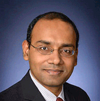

Investigators
Santosh Kumar, Ph.D.
Lead PI, Center Director, TR&D1, TR&D2, TR&D3


Dr. Santosh Kumar is the Lillian and Morrie Moss Chair of Excellence Professor in the Department of Computer Science at the University of Memphis and the Director of the NIH Center of Excellence for Mobile Sensor Data-to-Knowledge (MD2K), which is headquartered at the University of Memphis. He received his Ph.D. in Computer Science and Engineering from The Ohio State University in 2006, where his dissertation won a presidential fellowship. In 2010, Popular Science magazine named him one of America’s ten most brilliant scientists under the age of 38 (called “Brilliant Ten”). In 2011, he chaired the “mHealth Evidence” meeting jointly organized by NIH, NSF, RWJF, and McKesson Foundation to establish evidence requirements for mHealth. In 2013, he was invited to meet with the NIH Director to advise him on NIH efforts in the area of mHealth and was invited to the White House to give a talk on the future of Biosensors. In 2014, he co-organized and co-chaired the NSF-NIH Workshop on Computing Challenges in Future Mobile Health (mHealth) Systems and Applications. He holds the distinction of receiving the largest grants from both NIH ($10.8 million in 2014) and NSF ($4 million In 2016) in the history of the University of Memphis. Santosh’s research seeks to define new frontiers in the newly-emerging discipline of mobile health (mHealth). His decade-long work has involved collecting mobile sensor data from over 100 human volunteers for 25,000+ hours in their natural environments as part of various scientific user studies. His collaborative research involves more than twenty faculty members from fifteen institutions, spanning a variety of disciplines, making his projects highly transdisciplinary. Visit Google Scholar page
Jim Rehg, Ph.D.
Deputy Center Director, TR&D1 Lead


Dr. Jim Rehg (pronounced 'ray") is a Professor in the School of Interactive Computing at the Georgia Institute of Technology, where he is co-Director of the Computational Perception Lab (CPL) and Director of the Center for Behavioral Imaging. He received his Ph.D. from CMU in 1995 and worked at the Cambridge Research Lab of DEC (and then Compaq) from 1995-2001, where he managed the computer vision research group. He received an NSF CAREER award in 2001 and a Raytheon Faculty Fellowship from Georgia Tech in 2005. He and his students have received best student paper awards at ICML 2005, BMVC 2010, Mobihealth 2014, and Face and Gesture 2015, and a 2013 Method of the Year Award from the journal Nature Methods. Dr. Rehg serves on the Editorial Board of the Intl. J. of Computer Vision, and he served as the Program co-Chair for ACCV 2012 and General co-Chair for CVPR 2009, and will serve as Program co-Chair for CVPR 2017. He has authored more than 100 peer-reviewed scientific papers and holds 25 issued US patents. His research interests include computer vision, machine learning, pattern recognition, and robot perception. Dr. Rehg is the lead PI on an NSF Expedition to develop the science and technology of Behavioral Imaging, the measurement and analysis of social and communicative behavior using multi-modal sensing, with applications to developmental disorders such as autism. He also serves as the Deputy Director of the NIH Center of Excellence on Mobile Sensor Data-to-Knowledge (MD2K).
Susan Murphy, Ph.D.
TR&D2 Lead

Dr. Susan Murphy is the Professor of Statistics and Computer Science, and the Radcliffe Alumnae Professor at the Radcliffe Institute, Harvard University. She directs the Statistical Reinforcement Learning Lab at Harvard University. Her research concerns clinical trial design and the development of data analytic methods for informing multi-stage decision making in health. In particular for (1) constructing individualized sequences of treatments (a.k.a., adaptive interventions) for use in informing clinical decision making and (2) constructing real-time individualized sequences of treatments (a.k.a., Just-in-Time Adaptive Interventions) delivered by mobile devices. Murphy has developed a formal model of this decision-making process and an innovative design for clinical trials called Sequential Multiple Assignment Randomized Trial (SMART) that allow researchers to optimize adaptive interventions. In 2016, she was elected a member of the National Academy of Sciences, in 2014, she was elected a member of the National Academy of Medicine, and in 2013, she was selected as a MacArthur Fellow.
Benjamin Marlin, Ph.D.
Co-I, TR&D1, TR&D2


Dr. Benjamin Marlin joined the College of Information and Computer Sciences at the University of Massachusetts Amherst in 2011. There, he co-directs the Machine Learning for Data Science lab. His current research centers on the development of customized probabilistic models and algorithms for time series with applications to the analysis of electronic health records and mobile health data. His recent work includes probabilistic models for analyzing wireless ECG data, detection of cocaine use from wireless ECG, hierarchical activity recognition from on-body sensor data with applications to smoking and eating detection, and methods for mitigating lab-to-field generalization loss in mobile health studies. Marlin is a 2014 NSF CAREER award recipient and a 2013 Yahoo! Faculty Research Engagement Program award recipient. His research has also been supported by the National Institutes of Health, the Patient-Centered Outcomes Research Institute, and the US Army Research Laboratory. Prior to joining UMass Amherst, Marlin was a fellow of the Pacific Institute for the Mathematical Sciences and the Killam Trusts at the University of British Columbia. He completed his PhD in machine learning in the Department of Computer Science at the University of Toronto.
Emre Ertin, Ph.D.
TR&D3 Lead
Dr. Emre Ertin is a Research Associate Professor with the Department of Electrical and Computer Engineering at The Ohio State University. He received the B.S. degree in Electrical Engineering and Physics from Bogazici University in Turkey in 1992, the M.Sc. degree in Telecommunication and Signal Processing from Imperial College, U.K. in 1993, and the Ph.D. degree in Electrical Engineering from Ohio State in 1999. From 1999 to 2002 he was with the Core Technology Group at Battelle Memorial Institute. His current research interests are biomedical sensor design and statistical signal processing with application to sensor networks and mobile health.
Mani Srivastava, Ph.D.
Co-I, TR&D3

Dr. Mani Srivastava is a Professor of Electrical Engineering and Computer Science at the University of California, Los Angeles. His research is broadly in the area of networked human-cyber-physical systems, and spans problems across the entire spectrum of applications, architectures, algorithms, and technologies. His current interests include issues of sensing, privacy, security, data quality, and variability in the context of applications in mHealth and sustainability. He is a deputy director of NSF Expeditions on Variability and is the lead investigator on an NSF Cyber Physical Systems Frontier Project called RoseLine. His works have been cited extensively (over 30,000 times) and have won several best paper awards. He has served as editor-in-chief of IEEE Transaction on Mobile Computing and the ACM Mobile Computing and Communication Review. He is a Fellow of IEEE.
Ida Sim, MD, Ph.D.
Co-I, TR&D3
Dr. Ida Sim is a is Professor of Medicine, Co-Director of Biomedical Informatics at the University of California, San Francisco’s Clinical and Translational Sciences Institute. She is also co-founder of Open mHealth, a non-profit organization that is breaking down barriers to mobile health app and data integration through an open software architecture. Dr. Sim received her M.D. and her Ph.D. in Medical Informatics from Stanford University, and is an international leader in informatics for health care and clinical research. Her research work is focused on knowledge-based technologies for evidence-based practice, especially in the ontological representation of clinical trials. In policy work, Dr. Sim was the founding Project Coordinator of the World Health Organization's International Clinical Trials Registry Platform, which sets global standards on clinical trial registration and reporting. She is a Fellow of the American College of Medical Informatics, and a member of the American Society for Clinical Investigation. She is also a practicing primary care physician.
Vivek Shetty, DDS, DrMedDent
Training & Dissemination Lead
Dr. Vivek Shetty is a Professor of Oral & Maxillofacial Surgery/Biomedical Engineering at the University of California, Los Angeles. A translational clinician-scientist, he is involved in the articulation of point of care technologies and remote monitoring systems to facilitate informed clinical decision making and population health management. His multiple positions in academic governance at UCLA, including Academic Senate Chair and Assistant Vice-Chancellor for Research, have fostered a special interest in developing interdisciplinary research and team science approaches that capitalize on diverse perspectives and knowledge domains to address the complexity of real-world problems. To build national capacity of transdisciplinary mHealth researchers with collaborative problem-solving skills as well as interpersonal and relational skills, he develops and leads national training programs and resources such as the NIH-mHealth Training Institute and the mHealthHUB. His role and responsibilities as Faculty Training Lead of the mDOT’s Training and Dissemination Core extend his work as Director of the Training Core for the NIH-Mobile Sensor Data to Knowledge (MD2K) Center and the NSF CRI: CI-EN Program.
NIH Staff
Tiffani Lash, Ph.D.
mDOT Program Officer

Dr. Tiffani Bailey Lash serves as a Program Director/Health Scientist Administrator at the National Institutes of Health. She manages the research portfolios for the Biosensors, Platform Technologies, and mHealth programs at the National Institute of Biomedical Imaging and Bioengineering (NIBIB). Dr. Lash is also the Program Director for the NIBIB Point of Care Technologies Research Network, consisting of three centers charged with developing point-of-care diagnostic technologies through collaborative efforts that merge scientific and technological capabilities with clinical need. Prior to her current position, Dr. Lash worked within the NIH’s science policy administration. During that time, she worked at the National Institute of General Medical Sciences and National Heart Lung and Blood Institute, as well as the NIH Office of the Director. Dr. Lash has been selected as a science policy fellow for both the American Association for the Advancement of Science (AAAS) and the National Academy of Engineering. She also has a background in small business innovation and intellectual property. Dr. Lash earned her Ph.D. in Physical Chemistry from North Carolina State University via a collaboration between the Departments of Chemistry and Chemical and Biomolecular Engineering. Her interdisciplinary research interests include microfluidics, biopolymers with controlled molecular architecture, and biosensor technologies.
Team
Timothy Hnat, Ph.D.
Chief Software Architect


Dr. Hnat is Chief Software Architect for the mDOT Center. He previously served as Assistant Professor of Computer Science at the University of Memphis. His research interests cover several areas of the construction and evaluation of distributed systems, including compilers, programming languages, networking, and wireless sensor networks. He seeks to harness the potential of distributed systems to affect and interact with the physical world to address mHealth issues.
Minjeong Jeon, Ph.D
Digital Training Evaluation
Dr. Jeon is an Associate Professor of Advanced Quantitative Methods at the department of Education of UCLA. Her research revolves around developing, applying, and estimating a variety of latent variable models for studying measurement and growth. Dr. Jeon also has a keen interest in developing efficient computational algorithms and software packages. Recent research topics include respondent-item network analysis, dynamic feedback process modeling, and joint modeling of behavioral and biological process data.
Nasir Ali, Ph.D.
Research Assistant Professor


Nasir Ali has a diverse research background from software engineering to mobile health (mHealth) and IoT space since 2009. His work has been published in top journals (Transactions in Software Engineering and Empirical Software Engineering). In 2016, he joined MD2K to conduct research and develop cloud-based solutions (i.e. Cerebral Cortex), standardization of mHealth sensor metadata, data analysis/modeling pipelines, and visualization layers to support high-frequency mobile sensor big data management, analysis, and producing actionable results. Nasir is the core developer of Cerebral Cortex.
Anandatirtha Nandugudi, Ph.D.
Data Science Software Engineer


Anandatirtha Nandugudi designs, develops, and validates mobile health (mHealth) biomarkers along with a team of graduate students at the MD2K Center of Excellence. He has a rich research background in the areas of mobile computing, networking and sensor networks, and has published several recognised works in these areas in proceedings such as UbiComp. In addition to leading the implementation of newly developed mHealth biomarkers in Cerebral Cortex and mCerebrum, he is volunteering his services to standardise health metadata as part of the IEEE P1752 working group to enable interoperability and wider adoption of mHealth biomarkers.
Syed ‘Monowar’ Hossain, Ph.D.
Lead Software Engineer

Dr. Hossain is Lead Software Engineer for the MD2K Center. He earned his Ph.D. in Computer Science at the University of Memphis. He has many years of experience in designing, implementing, integrating, testing and supporting mHealth applications to conduct research studies using wearable sensors for mobile devices on the Android platform. His research interest is on real time inference of different user behavior and context from physiological measurements collected from body worn sensors.
Joseph Biggers
Director of Operations


Joe coordinates the work of the entire mDOT team, handles communication with external stakeholders and enquiries, and has worked as the director of operations for the MD2K Center of Excellence at the University of Memphis since 2014. Prior to joining MD2K, Mr. Biggers was Director of Alumni & Constituent Relations for the University of Memphis Alumni Association and was responsible for day-to-day office operations, including staff supervision and human resources. Biggers was a North Carolina Teaching Fellow and received both his bachelors and masters degrees in Sport Management & Administration from East Carolina University. Before moving to Memphis and joining the University staff in 2008, he taught in the North Carolina Public School System and interned with the Atlantic Coast Conference and the ECU Pirate Club.
Cheryl Hayes
Business Officer


Since joining the University of Memphis's Department of Computer Science in September 2003, Cheryl has held the title of secretary, and later of Administrative Associate until April 2015. Ms. Hayes ran the day-to-day operations for the department, including administrative, academic, HR, financial and research support. She has gained valuable knowledge, skills and experience during her 11-plus years at the university. Also during her tenure, she has earned an MPS in Human Resources Leadership degree and an MBA degree. Her BBA degree was earned from Delta State University in Cleveland, MS.
Shahin Samiei
Associate Director, Research & Studies


Shahin is the research data & study coordinator for the MD2K Center at the University of Memphis. His background includes a Bachelor of Science in Biology and a Master of Public Health, both from the University of Memphis. Shahin has previously worked for the University of Memphis as a Research Associate, where he was responsible for the day-to-day operation of a research partnership involving the Urban Child Institute and Shelby County Schools. His previous work helped to build greater understanding of how early experiences affect school readiness and later academic achievement for young children in Memphis, Tennessee.
Brian Ahern
Technical Writer/Training Specialist

Brian develops and maintains the mDOT website along with other digital content, instructional content, and training support for mDOT and the MD2K Center at the University of Memphis. He holds a Master of Arts degree in English with a concentration in Professional Writing as well as a Bachelor of Business Administration degree in Management Information Systems, both from the University of Memphis. Prior to joining MD2K, he worked on the Creative Design Team at Hunter Fan Company where he authored and designed manuals for all Hunter products as well as developed marketing copy and other user-facing communications.
Lyndsey Rush
Project Coordinator

Lyndsey joined the MD2K team at the University of Memphis in 2018 as a project coordinator. Her expertise is in business administration and international business. Ms. Rush runs the day-to-day operations of MD2K through administrative support and establishes, oversees, and carries out departmental and organizational goals, policies, and procedures.